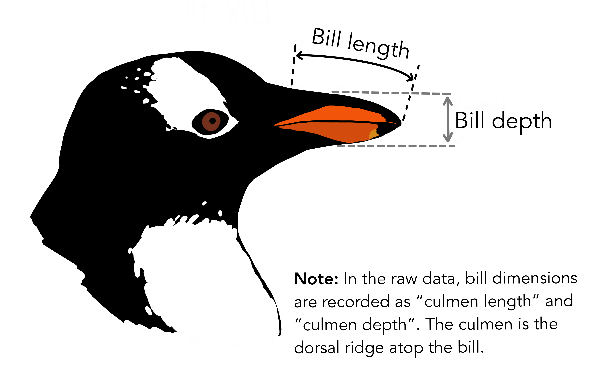

Code
tinytex::parse_install(
text = "! LaTeX Error: File `titlepic.sty' not found."
)이광춘, “글을 쓰는 것은 소프트웨어 개발이다!”, 강서양천신문 특집기고(’15년 9월) 와 LaTeX, PDF, 문서, 그리고 사고에서 관련 내용을 발췌한 것임을 밝혀둡니다. 그리고, Quarto PDF 문서를 많이 참고 했습니다.
200자 원고지 4장은 통상 A4 용지 한장에 해당한다. 만약 A4 용지 10장 보고서나 논문을 작성한다고 하면, 종이 200자 원고지 40장에 연필이나 볼펜을 가지고 작성하게 된다. 최종본을 얻기까지 빨간색으로 선생님이나 주변의 첨삭지도를 받아 최종본을 만들기까지 여러번의 반복과정을 거치게 된다.
최종 원고가 200자 원고지 40장에 담겨 탈고를 마치게 되면, 독자에게 다가갈 준비를 한다. 그림을 넣거나 아름다운 글씨체를 적용해 보고 종이 재질을 바꿔보기도 하고 영혼이 담긴 원고를 독자가 보기 좋고, 이해하기 쉽고, 때로는 감동과 재미를 줄 수 있도록 출판 단계에서 많은 사람들의 노력이 들어간다.
탈고를 마친 원고에 글씨체를 비롯한 디자인 작업이 완료되면 출판장비를 갖춘 출판소에서 인쇄장비를 거쳐 종이책 혹은 보고서가 완성되고, 이렇게 대량으로 출력되면 각 서점으로 배송되어 독자가 서점에서 구독을 하게 된다.
저자의 생각을 글로 표현하면 현재도 대부분 편집 및 디자인, 출판, 배송, 서점 등 각 단계에 사람이 관여하고 필요에 따라서는 컴퓨터가 작업을 지원하는데 사용되어 최종 독자에게 전달된다.
책과 보고서 제작하는 과정은 워드 프로세스를 기본으로 두고, 숫자 계산이 필요하면 엑셀, 이미지가 필요하면 그래픽 전문 소프트웨어, 정보 검색도 웹브라우져를 사용한다. 글자, 단어, 문장, 문단, 장/절/항으로 생각의 단위를 서문, 본문, 결어 및 참고문헌, 주석, 그림, 그래프, 도표 등도 함께 체계적으로 작성해 나간다.
다양한 소프트웨어를 통해서 원고를 탈고하게 되면 서식, 문장 문단 모양, 색인, 참조문헌 등 보기 좋고 가독성 높은 형태로 외양을 입히는 과정을 거치게 되는데 이 과정도 소프트웨어가 핵심적인 역할을 하게 된다. 책과 보고서에 대한 디자인 작업이 완료되면 다양한 형태로 배포하기 위한 프로그래밍 과정을 거쳐 PDF, 전자책(ePUB), 웹(HTML), 출판책 형태로 독자에게 전달된다.
글을 써서 이를 독자에게 전달되는 과정은 과거에 전문작가, 디자인 전문가, 출판전문가, 서점운영자 등 수많은 전문가가 연관되어 있고 타자기, 디자인 기계, 인쇄기 등 수많은 기계가 필요했으며 이를 사업적으로 기술적으로 연결할 수 있는 다양한 통신 방법이 필요했다. 비전문가가 밖에서 보면 복잡하고 어려워 보이지만, 컴퓨팅 사고의 시각으로 보면 단순할 수 있다.


미국 스탠포트 대학 크누스(Donald Knuth) 교수가 1977년에 만든 문서조판 프로그램을 \(\TeX\)(“텍”이라고 읽음)이라고 하고, Leslie Lamport 교수가 만든 TeX 매크로 팩키지를 LaTeX(“레이텍”이라고 읽음)이라고 한다. 수학과 교수였던 크누스 교수는 문서 식자체계를 통해 수식도 사용하기 쉽게 개발했고 METAFONT 폰트도 개발하여 양질의 글자체를 제작했다. 이후 레슬리 램포트가 \(\LaTeX\)을 쉽게 쓸 수 있도록 다양한 매크로를 작성하여 공개했다. 이를 바탕으로 일반인도 고품질의 문서를 \(\LaTeX\)으로 작성할 수 있게 되었다. 버클리 마이클 스피백(Michael Spivak) 교수는 수식을 쉽게 문서화시킬 수 있는 AMS-TeX을 매크로로 작성하여 공개하여 “The Joy of TeX” 책을 출간하기도 했다.
pdftex과 e-TeX이 합쳐져서 사실상(de factor) 표준 TeX이 되었고, XeTeX과 LuaTeX이 기존TeX을 대체하면서 발전하고 특히, 한글 폰트 때문에 XeTeX[“지텍”이라고 읽음]을 한글처리를 위해서 많이 사용하고 있다.1
\(\LaTeX\)의 동작원리는 Salomon이 도식화한 것에 영감을 받아, Kees van der Laan 2이 1994년 정리한 논문에 잘 정리되어 있다. 기본적으로 고품질 전자출판을 위해서 폰트와 더블어 TeX이 필요하고 이를 하나로 묶어서 고품질 출력물을 얻게된다. 저자가 편집기(editor)로 작업한 .tex 파일이 폰트(Fonts) 작업과정과 조판(Typesetting)과정이 하나로 합쳐져 출력물이 산출된다. TeX 기본 엔진을 지원하는 다양한 TeX 팩키지, AMS-(La)TeX, LaTeX, manmac가 눈에 띈다.
문서에 들어가는 다양한 구성요소, 목차, 색인, 참고문헌, 그림과 표 등은 모듈화되어 관리되고, 폰트나 구조 스타일과 관련된 것도 별도로 구분되어 관리되고 있으며, TeXWorks같이 위지윅을 지원하는 은 편집기는 구문강조 및 맞춤범 검사등 고품질 LaTeX 저작물 작성을 위해 저작자를 지원하고 있다.

기본적인 LaTeX 작동방식 및 주요 모듈에 대해 살펴본 후에 효과적인 LaTeX 문서을 위한 구성요소를 세부적으로 살펴보자.
dvips를 사용하여 과거 EPS그림을 주로 사용했으나, 현재는 .jpg, .png, .pdf도 잘 처리한다.\usepackage[utf8x]{inputenc} 사용이 필요한 경우가 많이 있다.makeindex와 bibtex가 색인과 참고문헌 처리를 위한 표준이지만, 유니코드를 좀더 잘 처리하고자 xindy와 biber도 주목받고 있다..dvi가 기본이였으나, 현재는 .pdf가 기본이고, 웹을 위한 다양한 .html 출력 생성도 지원한다. 즉, 과거에는 책 형태가 최종문서 산출물의 기본이였지만, 현재는 그리고 앞으로는 웹이 과거 책 형태의 위치를 차지하여 기본이 되고 책은 보조적인 역할로 남을 것으로 보인다.PDF는 기술적, 학술적, 사업적으로 혁신적인 문서 양식이다. PDF가 개발된 것은 오랜 역사를 자랑하지만 아래한글, 워드퍼펙트, MS 워드, 리브레 워드 등에 가려 그 진가를 발휘하지 못했다. 하지만 이제 PDF는 문서 출판의 최고봉이라는데 이의를 제기하는 사람은 없을 것이다.
PDF 를 통해 아도비(Adobe) 회사는 엄청난 성공을 이어나가고 있고, 과학기술 저작에도 필수적인 파일 형태라 PDF에 대한 기본소양은 인공지능 시대를 살고 있는 시민으로 누구나 갖춰야하는 소양이다.
보통 TexLive에 기반을 둔 tinytex 를 사용하는데 한글을 사용하는 입장에서는 kotex를 설치하는 방법도 모색이 필요하다. 유니코드 문자를 처리하기 위해서 xelatex이 Quarto \(\LaTeX\) 기본엔진이다. 달리 특정하지 않게 되면 xelatex을 통해 CJK 문자가 포함된 PDF 파일 제작이 가능하다.
quarto install tool tinytexkotex 이 갖는 장점은 한글관련 이슈가 될만한 거의 모든 \(\LaTeX\) 패키지와 기본 한글글꼴도 내장하고 있다는 점이다. 하지만, tidytex를 기본 \(\LaTeX\) 엔진으로 사용하는 경우 빠진 패키지로 인해 후속 작업이 어려운 경우 tinytex::parse_install() 함수를 사용하게 되면 다음과 같이 오류난 텍스트를 붙여넣게 되면 자동으로 설치해준다.
tinytex::parse_install(
text = "! LaTeX Error: File `titlepic.sty' not found."
)문서를 구성하는 기본사항을 적어둔다. PDF 문서를 저작하는 것이라 \(\LaTeX\) 에 대한 기본 지식은 Quarto PDF 문서를 생성하는데 많은 도움이 된다. 글꼴 지정관련하여 로컬 컴퓨터에 폰트 디렉토리에 관련 글꼴 정보가 운영체제와 연결되어 있어야 한다.
Pandoc 문서에 메타데이터 variables for LaTeX을 참조하여 필요한 상세설정작업을 수행한다.
---
title: "한글 PDF"
format:
pdf:
documentclass: report
papersize: a4
toc: true
toc-depth: 2
number-sections: true
colorlinks: true
include-in-header:
text: |
\usepackage{pdfpages}
bibliography: bibliography.bib
link-citations: yes
csl: apa-single-spaced.csl
mainfont: "NanumMyeongjo"
sansfont: "NanumGothic"
monofont: "D2Coding"
---Quarto 가 문서 변환 핵심 엔진으로 사용하고 있는 Pandoc 은 \(\LaTeX\) 외에도 ConTeXt, roff ms, HTML (via wkhtmltopdf) 을 사용해서 PDF 파일을 제작할 수 있다. 기존 Pandoc을 이런 방식으로 PDF 를 제작하신 분은 다음 내용을 건너뛰는 것도 좋을 듯 싶다.
마크다운으로 이미지, 표, 텍스트, 서식, 수식 등 다양한 저작사항을 .qmd 파일에 담아내면 \(\LaTeX\) 엔진이 PDF로 변환작업을 수행해준다.
\(\LaTeX\)에 이미지도 삽입가능하다.


\(\LaTeX\)에 R 파이썬 코드를 통해 계산된 결과를 그래프, 표, 요약통계량 등으로 뽑아내 삽입가능하다.
mass_flipper <- ggplot(data = penguins,
aes(x = flipper_length_mm,
y = body_mass_g)) +
geom_point(size = 3,
alpha = 0.8) +
theme_minimal() +
labs(title = "팔머 관측소 LTER 서식 펭귄 크기",
subtitle = "Adelie, Chinstrap, Gentoo 펭귄에 대한 물갈퀴 길이와 체질량",
x = "물갈퀴 길이(Flipper length) (mm)",
y = "체질량(Body mass) (g)") +
theme_minimal()
mass_flipper\(\LaTeX\)에 \(\LaTeX\) 표를 넣을 수도 있고 R 혹은 파이썬에서 나온 표를 PDF 파일에 넣을 수도 있다.
gt 표knitr::kable(
mtcars[1:6, 1:10]
)| mpg | cyl | disp | hp | drat | wt | qsec | vs | am | gear | |
|---|---|---|---|---|---|---|---|---|---|---|
| Mazda RX4 | 21.0 | 6 | 160 | 110 | 3.90 | 2.620 | 16.46 | 0 | 1 | 4 |
| Mazda RX4 Wag | 21.0 | 6 | 160 | 110 | 3.90 | 2.875 | 17.02 | 0 | 1 | 4 |
| Datsun 710 | 22.8 | 4 | 108 | 93 | 3.85 | 2.320 | 18.61 | 1 | 1 | 4 |
| Hornet 4 Drive | 21.4 | 6 | 258 | 110 | 3.08 | 3.215 | 19.44 | 1 | 0 | 3 |
| Hornet Sportabout | 18.7 | 8 | 360 | 175 | 3.15 | 3.440 | 17.02 | 0 | 0 | 3 |
| Valiant | 18.1 | 6 | 225 | 105 | 2.76 | 3.460 | 20.22 | 1 | 0 | 3 |
팔머펭귄 데이터는 Kristen Gorman 박사와 남국 팔머 관측소(Palmer Station, Antarctica LTER)에서 수집되어 공공에 이용가능하게 공개되었습니다.
{palmerpenguins} 패키지 (Horst et al., 2020)를 통해 R에서 손쉽게 이용가능하게 되었고 원데이터는 Gorman et al. (2014) 에서 최초 공개되었다.
fitpaper \(\LaTeX\) 패키지를 사용해서 책 첫장(\frontmatter)과 마지막장(\backmatter) 겉면을 장식할 수 있다.
Quarto PDF Engines에서 \(\LaTeX\) 엔진을 별도 다룰 정도로 \(\LaTeX\) 엔진은 중요하다. Quarto 에서는 TinyTeX를 기반엔진으로 사용되는데 TeX Live 배포판에 기반하고 Pandoc 에서 가장 많이 사용되는 대략 200 여개 패키지를 포함시켜 사용성은 좋게하면서 크기는 대폭 줄였다.
.qmd 파일 YAML 헤더에 로컬 컴퓨터에 등록된 글꼴을 지정하는 방식도 있다.
mainfont: "NanumMyeongjo"
sansfont: "NanumGothic"
monofont: "D2Coding"
CJKmainfont: "NanumGothic"다른 방식은 글꼴 관련 사항은 packages.tex \(\TeX\) 파일에 지정하는 것이다.
format:
pdf:
include-in-header:
- packages.tex
- macros.tex
include-before-body: before.tex예를 들어 packages.tex 에 한글 글꼴을 다음과 같이 지정한다.
% 한글 폰트 ----------------------------
\setmainhangulfont{NanumMyeongjo} % 나눔명조
\setsanshangulfont{NanumGothic} % 나눔고딕
\setmonohangulfont{D2Coding} % D2코딩